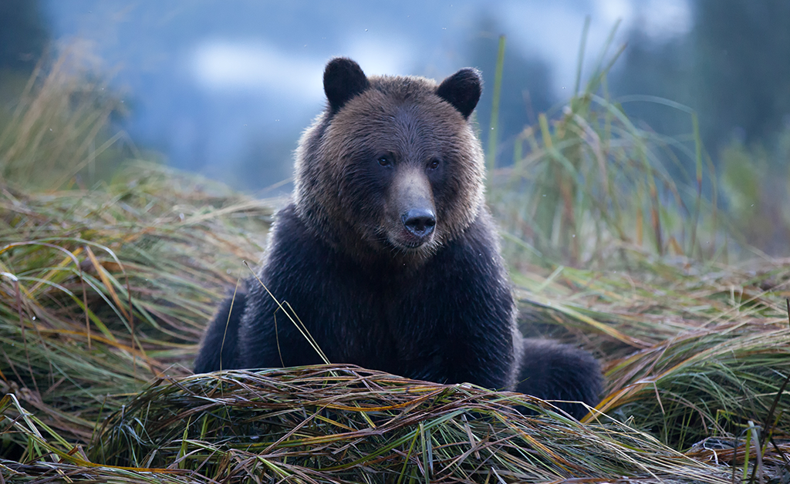

Bear
Grizzly bears are an iconic North American mammal, found in Alaska, parts of Canada, and portions of the northwest US. They are a subspecies of brown bear , distinguished by their color, a muscular hump on their back, and the length of their claws. These magnificent creatures define many national parks in the US, partially because of their status as “threatened” under the Endangered Species Act.
Few animals have captured the imagination like brown bears. They can stand on two legs, walk on the soles of their feet, pick things up with their “fingers,” and often eat what we eat. This—coupled with their ability to communicate with one another through scratch marks left on trees, smells and sounds—establishes a similarity to our own way of life. Some of the largest living carnivores, brown bears have fallen prey to hunting and other conflicts with humans.